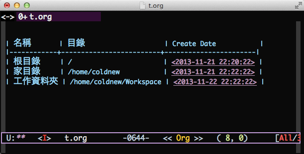
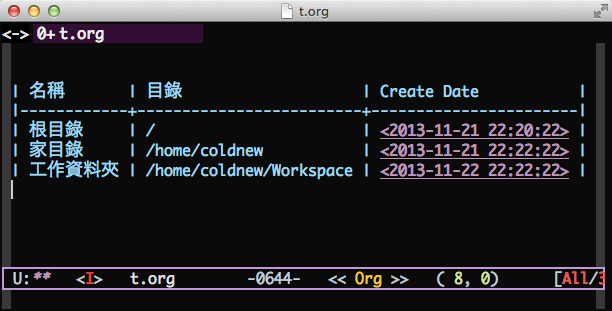

在 org-mode 中使用表格非常簡潔明快，唯一的缺點是在表格中，中英文會出現對齊不良的 狀況，這是因為我們設定的中英字體大小無法匹配，導致如下圖左的狀況:

原始的 org table 中英文對齊狀況

修改後 org table 中英文對齊狀況
要解決這樣的問題，有以下幾種方案:
- 1. 修改字體，製作出中英文大小匹配的字體
- 2. 使用終端版本的 emacs
- 3. 調整字體的大小，使其匹配
第一種方案非常不優雅，因為你必須自己製作新的字體，產生所謂的 混種字體 ，很可惜的，網路上流傳的解法以第一種居多。為了更加優雅的解決這個問題， 我採用第三種方案，先找尋中英字體可以匹配的大小，在使用 elisp 去根據匹 配的資料進行調整字體大小。以下是我用的 elisp code:
定義和字體相關的變數
首先先定義自己想使用的中英文字體
(defvar emacs-english-font "Monaco" "The font name of English.") (defvar emacs-cjk-font "Hiragino Sans GB W3" "The font name for CJK.")
為了可以在 org-mode 的表格中縮放字體也不會有中英文排版亂掉的情況，我的 字體設定是以 pair 的形式來進行設定， emacs-font-size-pair 存放預設的 字體，若有使用我自訂的字體放大/縮小命令，則這個變數也會更著被修改。
emacs-font-size-pair-list 則是經過測試確定能夠匹配良好的字體對，後面 的 elisp 將根據這個字體對來調整你的字體大小。
(defvar emacs-font-size-pair '(15 . 18) "Default font size pair for (english . chinese)") (defvar emacs-font-size-pair-list '(( 5 . 6) (10 . 12) (13 . 16) (15 . 18) (17 . 20) (19 . 22) (20 . 24) (21 . 26) (24 . 28) (26 . 32) (28 . 34) (30 . 36) (34 . 40) (36 . 44)) "This list is used to store matching (englis . chinese) font-size.")
在圖形介面下調整字體設定
這邊主要定義 set-font 這個函式，他會根據傳送給他的字體資訊，即時設定 整個 emacs 的字體大小，這樣也不會有切換 buffer，但是字體確沒有跟著之前的 設定而變大/變小的狀況出現。
(defun font-exist-p (fontname) "Test if this font is exist or not." (if (or (not fontname) (string= fontname "")) nil (if (not (x-list-fonts fontname)) nil t))) (defun set-font (english chinese size-pair) "Setup emacs English and Chinese font on x window-system." (if (font-exist-p english) (set-frame-font (format "%s:pixelsize=%d" english (car size-pair)) t)) (if (font-exist-p chinese) (dolist (charset '(kana han symbol cjk-misc bopomofo)) (set-fontset-font (frame-parameter nil 'font) charset (font-spec :family chinese :size (cdr size-pair))))))
set-font 函式完成後，我們可以來設定預設的中英字體與大小了。
;; Setup font size based on emacs-font-size-pair (set-font emacs-english-font emacs-cjk-font emacs-font-size-pair)
使用 C-= 或是 C– 來調整字體大小
能夠設定字體後，接著我們必須根據我們設定字體的規則，另外定義一個改變字 體的函式，這個函式將根據 emacs-font-size-pair-list 去找尋前一個/後一 個字體，並調用 set-font 函式去調整字體。
(defun emacs-step-font-size (step) "Increase/Decrease emacs's font size." (let ((scale-steps emacs-font-size-pair-list)) (if (< step 0) (setq scale-steps (reverse scale-steps))) (setq emacs-font-size-pair (or (cadr (member emacs-font-size-pair scale-steps)) emacs-font-size-pair)) (when emacs-font-size-pair (message "emacs font size set to %.1f" (car emacs-font-size-pair)) (set-font emacs-english-font emacs-cjk-font emacs-font-size-pair))))
接著，定義兩個可以在 emacs 下使用 M-x 呼叫的命令，透過這兩個命令去放大 /縮小我們所設定的字體對。
(defun increase-emacs-font-size () "Decrease emacs's font-size acording emacs-font-size-pair-list." (interactive) (emacs-step-font-size 1)) (defun decrease-emacs-font-size () "Increase emacs's font-size acording emacs-font-size-pair-list." (interactive) (emacs-step-font-size -1))
最後，綁定到自己習慣的按鍵，就大功告成啦 :)
(global-set-key (kbd "C-=") 'increase-emacs-font-size) (global-set-key (kbd "C--") 'decrease-emacs-font-size)